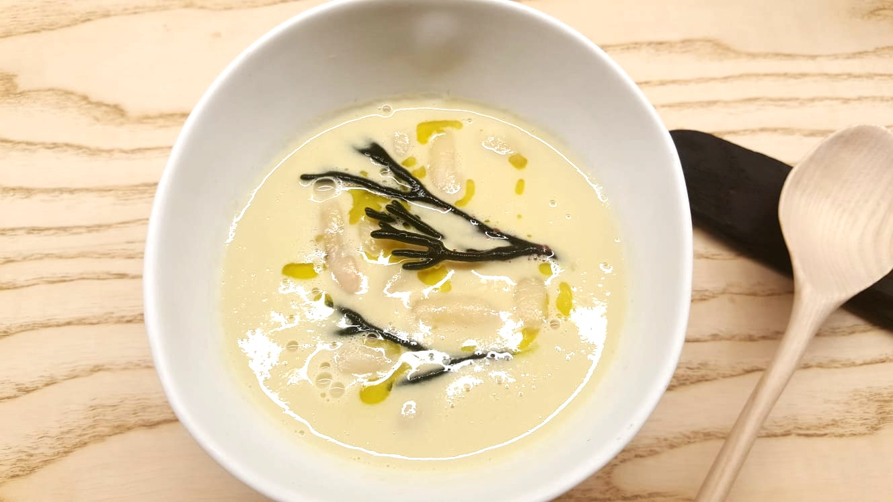
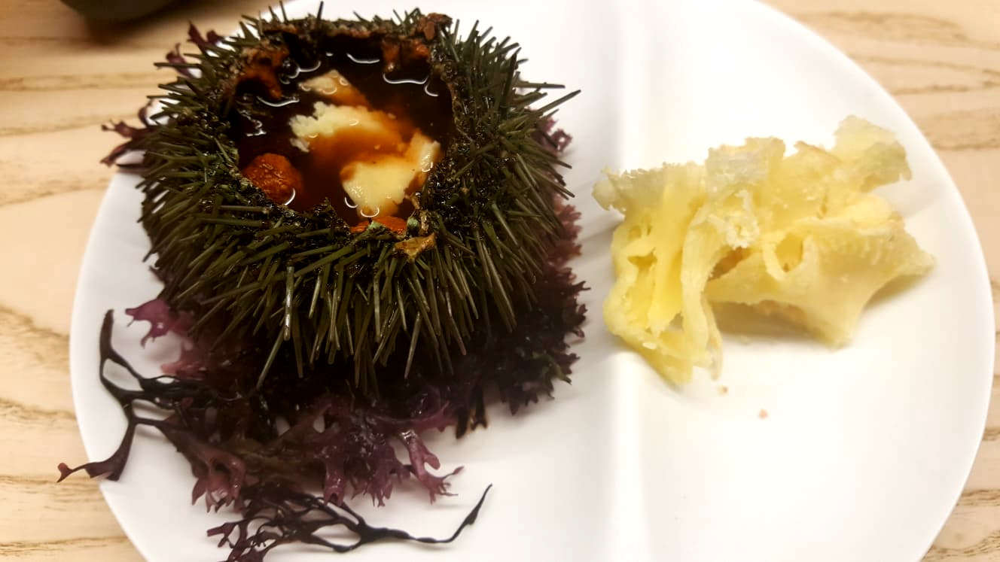
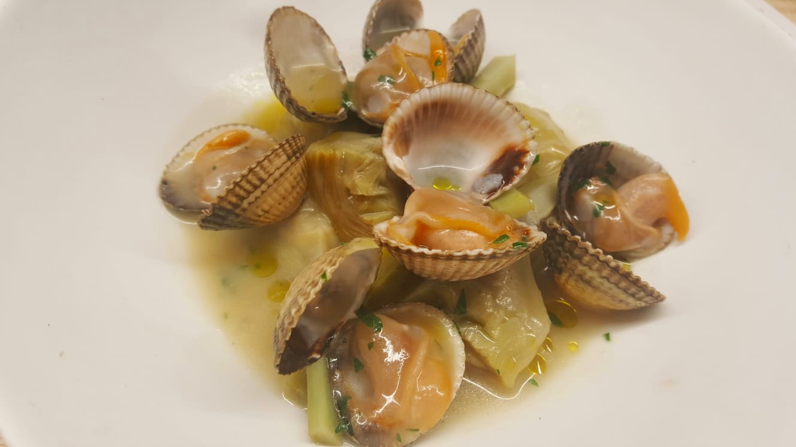
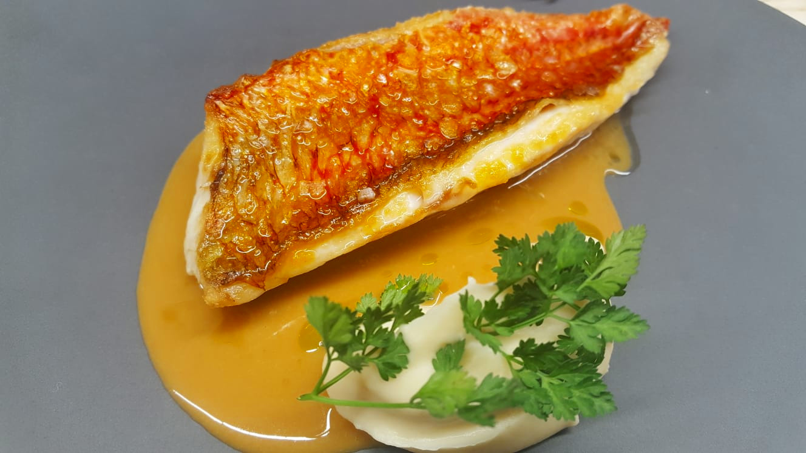
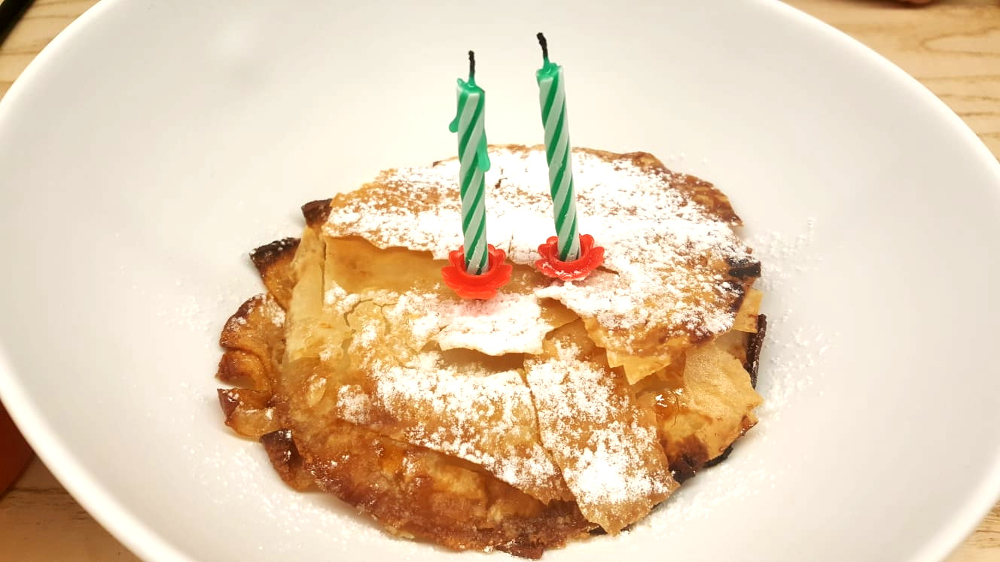
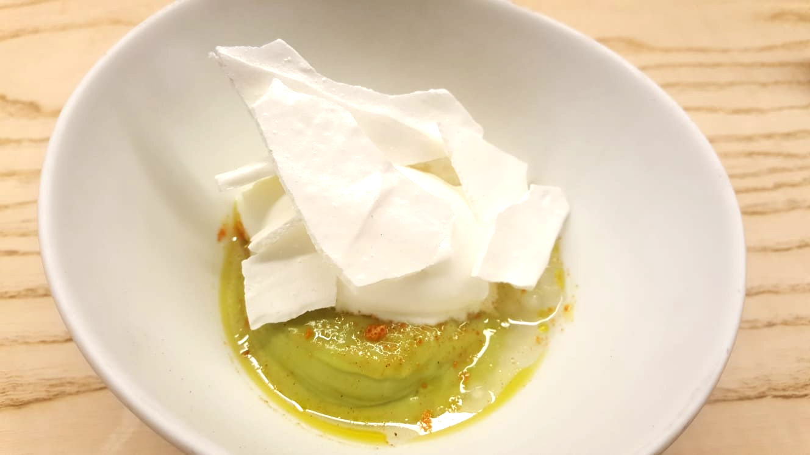

<!-- Main Content -->
<div class="container">
  <div class="row">
    <div class="col-lg-8 col-md-10 mx-auto">
      <div class="post-preview">
        <h2 class="post-title"><strong>{{ title }}</strong></h2>
        <p class="post-meta"></p>
      </div>
      <hr>
      <div class="post-preview">
        <h4 class="post-subtitle post-meta">{{ subtitle }}</h4>
        <p>El pasado 27 de marzo nos acercamos al recien inagurado Nado (abrió sus puertas el pasado Febrero) a celebrar mi cumpleaños.
          Con unas críticas bastante buenas en
          <a href="https://www.tripadvisor.es/Restaurant_Review-g187507-d16609217-Reviews-NaDo-La_Coruna_Province_of_A_Coruna_Galicia.html" target="_blank">tripadvisor</a>
          y avalado por la trayectoria de Iván Domínguez (Marcelo, Alborada y Arallo) era un valor seguro y no defraudó.</p>
        <p>Local muy moderno, en el que la cocina comparte espacio con el comedor. El único pero que a mi juicio es bastante grave es el olor en la sala cuando cocinan el pescado.</p>
        <p>Los platos de la carta son en su mayoría medias raciones, ideal para compartir en pareja cuatro o cinco platos resultando un menú degustación un tanto informal, resultando mas divertido.</p>
        <p>El primer plato consistió en unas habas con algas super original y muy rico. Puro sabor a mar.</p>
        <a class="fancybox" rel="group" href="../../assets/images/restaurantes/nado/27_03_2019/1_habas_con_algas.jpg">
          
        </a>
        <p class="font-weigth-light text-uppercase p-title-photos">Habas con algas</p>
        <p>Seguimos con erizo y queso. Plato un tanto sotisficado pero que resultó ser el más flojito de la noche.</p>
        <a class="fancybox" rel="group" href="../../assets/images/restaurantes/nado/27_03_2019/2_erizo_con_queso.jpg">
          
        </a>
        <p class="font-weigth-light text-uppercase p-title-photos">Erizo con queso</p>
        <p>Tercer plato un espectacular guiso de alcachofas con berberechos. El punto tanto de las alcachofas como de los berberechos era perfecto.</p>
        <a class="fancybox" rel="group" href="../../assets/images/restaurantes/nado/27_03_2019/3_alcachofas_guisadas_con_berberechos.jpg">
          
        </a>
        <p class="font-weigth-light text-uppercase p-title-photos">Alcachofas con berberechos</p>
        <p>El último de los salados fue un lomo de un salmonete espectacular por su tamaño, punto de cocción, sabor y acompañamiento, un pure de apio e hinojo</p>
        <a class="fancybox" rel="group" href="../../assets/images/restaurantes/nado/27_03_2019/4_salmonete_con_pure_de_apio.jpg">
          
        </a>
        <p class="font-weigth-light text-uppercase p-title-photos">Salmonete con puré de apio</p>
        <p>Y el turno de los postres. Compartimos dos, tarta de manzana con miel y merengue con mango.</p>
        <a class="fancybox" rel="group" href="../../assets/images/restaurantes/nado/27_03_2019/tarta_de_manzana.jpg">
          
        </a>
        <p class="font-weigth-light text-uppercase p-title-photos">Tarta de manzana</p>
        <a class="fancybox" rel="group" href="../../assets/images/restaurantes/nado/27_03_2019/merengue_con_mango.jpg">
          
        </a>
        <p class="font-weigth-light text-uppercase p-title-photos">Mango con merenge</p>
        <p>Con tres copas de vino de la casa y dos cafés la cuenta ascendió a 76 euros lo que lo situa en unos de los restaurantes con mejor calidad precio de Galicia.
        En cualquier caso hay que darle un poco mas de tiempo porque puede pasar facilmente de ser un magnífico restaurante a una de las referencias gastronómicas indiscutibles de Galicia.</p>
        <p id="fecha-visita"><em>"Visitado por ajo</em> &amp; <em>cebolla el 27 de marzo de 2019"</em></p>
        <p class="font-weigth-light text-center text-uppercase"> - galería - </p>
        <div id="carouselExampleControls" class="carousel slide" data-ride="carousel">
          <div class="carousel-inner">
            <div class="carousel-item active">
              
            </div>
            <div class="carousel-item">
              
            </div>
            <div class="carousel-item">
              
            </div>
            <div class="carousel-item">
              
            </div>
            <div class="carousel-item">
              
            </div>
            <div class="carousel-item">
              
            </div>
          </div>
          <a class="carousel-control-prev" href="#carouselExampleControls" role="button" data-slide="prev">
            <span class="carousel-control-prev-icon" aria-hidden="true"></span>
            <span class="sr-only">Previous</span>
          </a>
          <a class="carousel-control-next" href="#carouselExampleControls" role="button" data-slide="next">
            <span class="carousel-control-next-icon" aria-hidden="true"></span>
            <span class="sr-only">Next</span>
          </a>
        </div>
        <hr>
        <!-- site address -->
        <div class="row address-site">
          <div class="col-lg-12">
            <p id="name-restaurant">Restaurante NaDo</p>
            <p id="street-restaurant">Callejón de la Estacada, 6</p>
            <p id="cp-restaurant">15002 A Coruña, España</p>
            <p id="tfno-restaurant">Reservas 981 979 433</p>
            <p id="web-restaurant">Stio WEB :<a href="http://nado.es/" target="_blank"> nado.es</a></p>
          </div>
        </div>
        <hr>
        <!-- google maps -->
        <div class="row google-maps-site">
          <div class="col-lg-12">
            <iframe src="https://www.google.com/maps/embed?pb=!1m18!1m12!1m3!1d2900.3403586295926!2d-8.401830684141226!3d43.36990687913204!2m3!1f0!2f0!3f0!3m2!1i1024!2i768!4f13.1!3m3!1m2!1s0xd2e7d4f1a625fc5%3A0xa0bec4f296a8a916!2sNaDo+Restaurante!5e0!3m2!1ses!2ses!4v1553881484076!5m2!1ses!2ses"></iframe>
          </div>
        </div>
      <hr>
      <!-- Pager -->
      <div class="row">
        <div class="col-lg-6 col-xs-12">
          <div class="clearfix">
            <button (click)='goUp()' class="btn btn-secondary">subir &uarr;</button>
          </div>
       </div>
        <div class="col-lg-6 col-xs-12">
          <div class="clearfix">
            <a class="btn btn-secondary" href="restaurantes/terreo">Último visitado &rarr;</a>
          </div>
       </div>
      </div>
    </div>
  </div>
</div>
